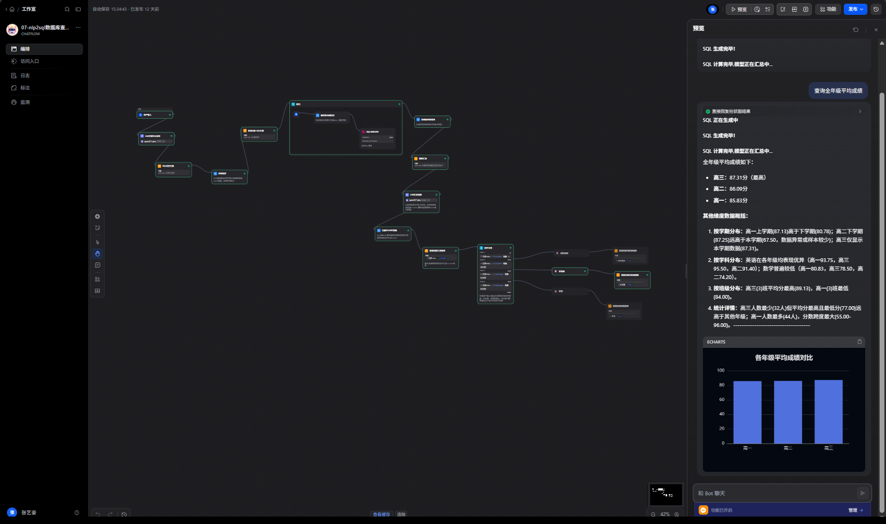

运行效果


工作流设计

我独立搭建了整套 Chatflow，并接入 MySQL，串联从提问到结果展示的各个环节。
- 生成查询 让大模型将自然语言问题转为 SQL，通过代码节点解析待执行的语句。
- 执行与汇总 在迭代节点调用 SQL 执行工具查询 MySQL，整理返回的数据，再交给模型生成文字摘要。
- 图表展示 根据汇总结果生成 ECharts 参数，通过条件分支输出折线图、柱状图或饼图。

我独立搭建了整套 Chatflow，并接入 MySQL，串联从提问到结果展示的各个环节。